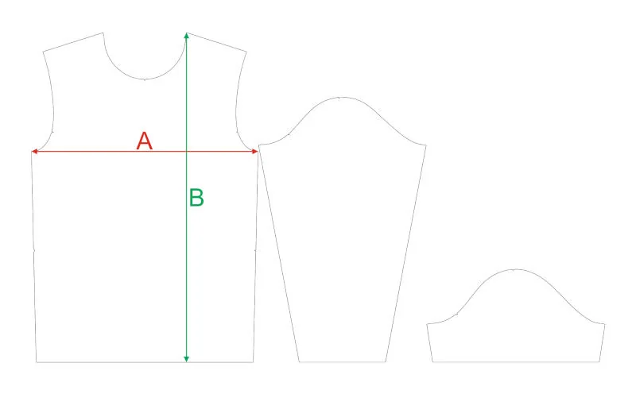

Ширина изделия
Измерьте футболку по груди от бокового шва до бокового шва. Если сравниваете с обхватом, умножьте A на 2.
Положите свою удобную футболку или лонгслив на ровную поверхность, расправьте ткань без натяжения и измерьте изделие. Так размер выбирается точнее, чем по абстрактному “S/M/L”.

Измерьте футболку по груди от бокового шва до бокового шва. Если сравниваете с обхватом, умножьте A на 2.
Измерьте от верхней точки плеча до низа изделия. Так понятно, не будет ли вещь слишком короткой или слишком длинной.
Для футболки смотрите короткий рукав, для лонгслива — длинный. Если любите свободную посадку, выбирайте размер с запасом.
Таблица подходит для футболок с коротким рукавом. Если собираете форму для команды, добавьте к размерам рост участников: так проще понять, где нужен запас по длине.
Международный размер — это быстрый ориентир. Если выбираете XS, смотрите всю колонку XS / RU 42: рост, ширину, длину и рукав.
| RUРоссийский размер | 30 | 32 | 34 | 36 | 38 | 40 | 42 | 44 | 46 | 48 | 50 | 52 | 54 | 56 | 58 | 60 | 62 | 64 |
|---|---|---|---|---|---|---|---|---|---|---|---|---|---|---|---|---|---|---|
| INTМеждународный ориентир | дет. 122 | дет. 128 | дет. 134 | дет. 140 | дет. 146 | XXS | XS | S | M | L | XL | 2XL | 3XL | 4XL | 5XL | 6XL | 7XL | 8XL |
| Рост, смОриентир по ростовке | 122 | 128 | 134 | 140 | 146 | 152 | 158 | 164 | 170 | 176 | 182 | 188 | 188 | 188 | 188 | — | — | — |
| A, смШирина изделия | 36 | 38 | 39,5 | 41 | 43 | 45,2 | 45,2 | 46,5 | 48,4 | 50,4 | 51,8 | 54,4 | 56,4 | 58,2 | 60 | 62 | 64,5 | 66,5 |
| B, смДлина изделия | 47 | 50 | 53 | 56 | 59 | 62,7 | 65,7 | 67,7 | 69,7 | 71,7 | 73,7 | 75,7 | 75,7 | 75,7 | 81,3 | 83,3 | 85,4 | 87,4 |
| Рукав, смКороткий рукав | 12,5 | 13 | 13,5 | 14 | 14,5 | 15,5 | 18,0 | 18,3 | 19,0 | 19,4 | 19,6 | 20,0 | 20,6 | 21,1 | 21,9 | 24 | 24,3 | 25,3 |
Для лонгслива смотрите ту же ширину A и длину B, а в строке “рукав” выбирайте длину длинного рукава. Если размера нет в таблице, уточним отдельно перед заказом.
| RUРоссийский размер | 40 | 42 | 44 | 46 | 48 | 50 | 52 | 54 | 56 | 58 | 60 |
|---|---|---|---|---|---|---|---|---|---|---|---|
| INTМеждународный ориентир | XXS | XS | S | M | L | XL | 2XL | 3XL | 4XL | 5XL | 6XL |
| Рост, смОриентир по ростовке | 152 | 158 | 164 | 170 | 176 | 182 | 188 | 188 | 188 | 188 | — |
| A, смШирина изделия | 45,2 | 45,2 | 46,5 | 48,4 | 50,4 | 51,8 | 54,4 | 56,4 | 58,2 | 60 | 62 |
| B, смДлина изделия | 62,7 | 65,7 | 67,7 | 69,7 | 71,7 | 73,7 | 75,7 | 75,7 | 75,7 | 81,3 | 83,3 |
| Рукав, смДлинный рукав | 59,2 | 60,6 | 62,1 | 63,8 | 65,3 | 66,8 | 68,1 | 69,7 | 71,1 | 73 | 74,5 |
Для бафов заранее выбираем формат: взрослый, детский или комплектный. Точные высоту и ширину согласуем под задачу, ткань и дизайн.
| Формат | Кому подходит | Что уточнить перед заказом |
|---|---|---|
| Взрослый формат | Большинство взрослых участников, походные группы, клубы, забеги. | Ткань, высоту изделия и повтор принта. Размер уточняем под задачу. |
| Детский | Детские группы, семейные походы, подростковые команды. | Возраст или рост участников. Размер уточняем под задачу. |
| В комплект к форме | Когда баф идёт вместе с футболкой или лонгсливом. | Связь с дизайном формы: цвета, логотипы, масштаб графики. Размер уточняем под задачу. |
Чтобы не уточнять размеры в переписке по кругу, можно сразу прислать одну таблицу по участникам и короткий комментарий по посадке.
Футболка, лонгслив, баф или комплект. Для футболки и лонгслива используем разные столбцы длины рукава.
Имя или номер участника, размер по таблице, ростовка, желаемая посадка: обычная, свободная или ближе к телу.
Ширина, длина и рукав из выбранной колонки. Если кто-то между размерами, добавьте комментарий “лучше свободнее” или “лучше ближе к телу”.
| Что указать | Пример | Зачем это нужно |
|---|---|---|
| Размер и ростовка | 48 / ростовка 176 | Чтобы выбрать правильную строку таблицы. |
| Мерки изделия | ширина 50,4 · длина 71,7 · рукав 19,4 или 65,3 | Чтобы выбрать нужную посадку и не перепутать длину рукава. |
| Посадка | Свободно под термобельё / ближе к телу | Чтобы форма не получилась слишком тесной или слишком свободной. |
Размеры указаны по актуальной сетке Trekki. Если сомневаетесь, пришлите мерки удобной вещи — поможем выбрать размер.